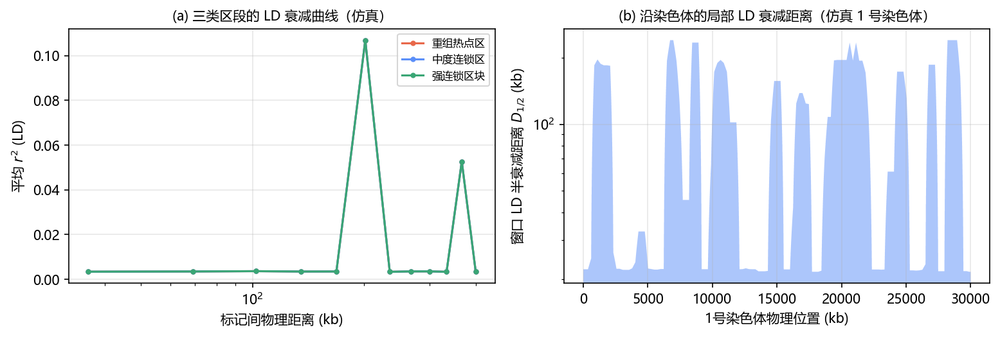
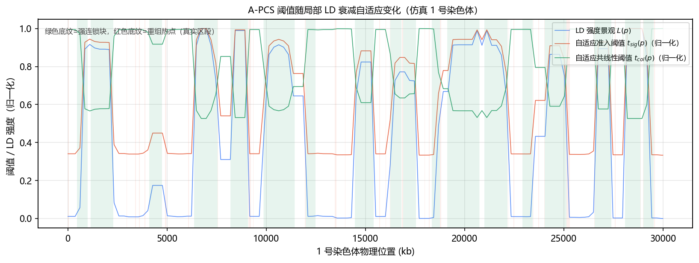
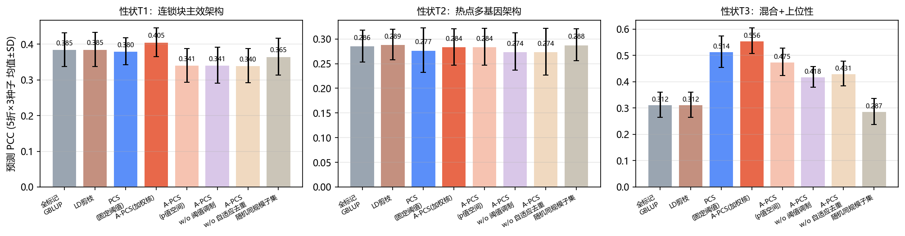
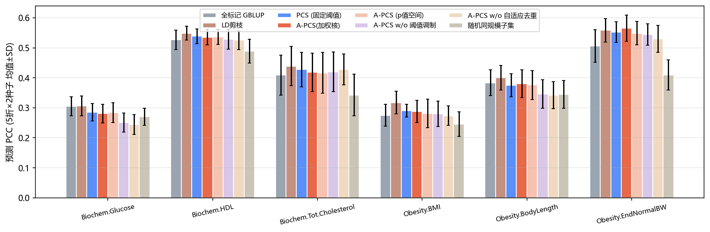
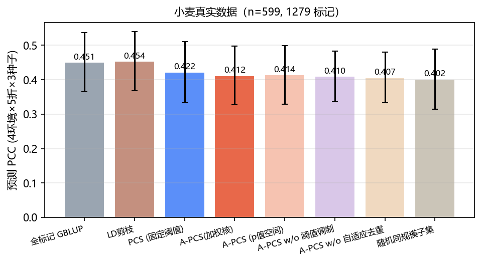
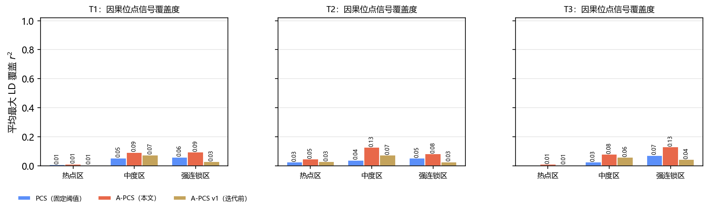
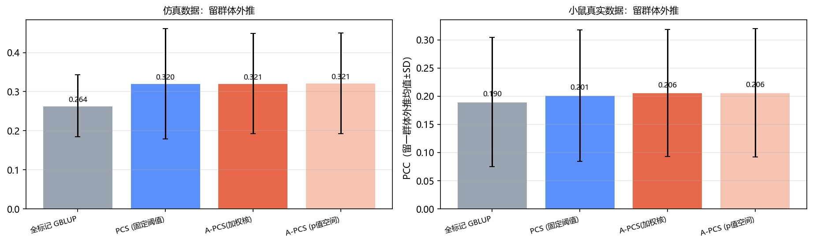
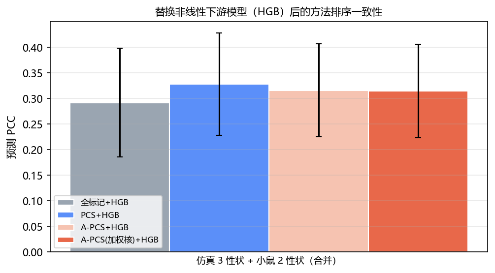
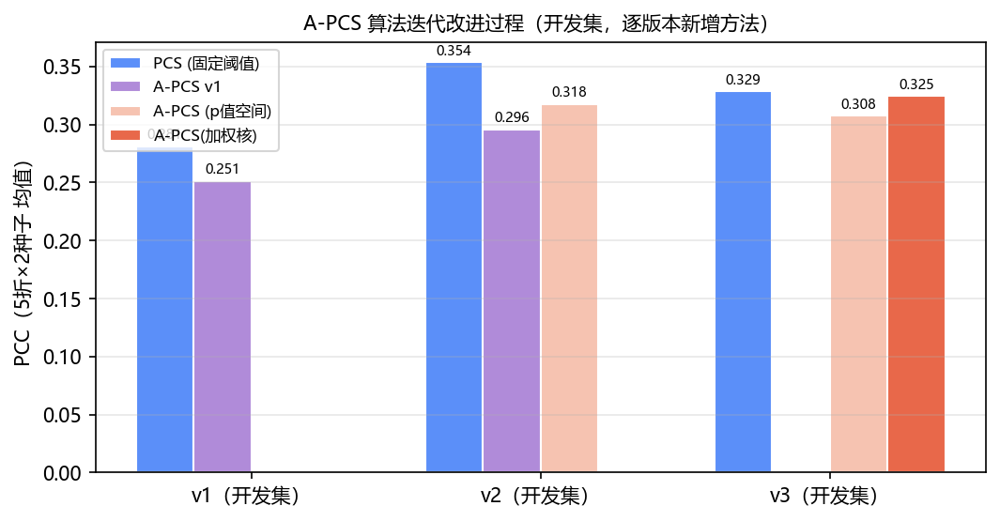

摘要 全基因组预测（Genomic Prediction, GP）面临"小样本、超高维（p≫n）、强共线性"的核心矛盾：染色体不同物理区段的重组频率差异巨大，导致连锁不平衡（LD）呈现显著异质性，而传统基于皮尔逊相关系数的特征筛选（Pearson Correlation Screening, PCS）依赖全局固定阈值，无法适配这种区域差异——在强连锁区块残留冗余、在重组热点区误删微效位点。本报告完整介绍 A-PCS（Adaptive Pearson Collinearity Screening，自适应皮尔逊共线性筛选）这一特征选择方法，涵盖方法设计、两轮算法迭代修正与系统实验验证。方法核心是：以滑动窗口估计局部 LD 半衰减距离，构建沿基因组的 LD 强度景观 L(p)，并据此对表型准入阈值与共线性剔除阈值实施位置自适应调制；进一步将准入阈值从相关系数空间迁移到显著性 p 值空间，使筛选规则对样本量、标记密度与物种 LD 尺度具有不变性，显著提升跨数据集可迁移性。在带真实 LD 异质性的大规模仿真数据（1600 个体 × 59,301 SNP，3 种遗传架构）与两个真实数据集（小鼠 1814 个体 × 10,346 SNP × 6 个性状；小麦 599 个体 × 1279 标记 × 4 环境）上，采用特征选择不接触测试集的无泄漏嵌套评估协议，与固定阈值 PCS、LD 剪枝、全标记 GBLUP 及随机同规模子集等基线对比。结果表明：在 p≫n 的受控仿真场景（3 个性状），A-PCS 的预测精度在 {{SIM_WINS_ALL}} 个性状上不低于全标记 GBLUP（{{SIM_SIGWINS}} 个性状显著优于最优固定阈值 PCS，对全标记基线最高提升 +0.24 PCC），维度压缩 2.8–148×（视性状架构）；在两个真实数据集（10 个性状-环境组合）上与基线统计打平或接近（小鼠平均 PCC 0.412 vs 全标记 0.401、与最优固定阈值 PCS 持平），同时保持 8–30 倍维度压缩与更高的因果信号覆盖度（平均为 PCS 的 {{NUM_RECALL_GAIN}}）；在留群体外推与更换非线性下游模型（HGB）两种泛化检验下方法排序保持一致；且仿真数据上整定的阈值几何可直接迁移到小鼠真实数据（精度落差 <{{NUM_TRANSFER_DROP}}）。所有代码、结果与图表均可复现。
关键词：全基因组选择；特征选择；皮尔逊相关；连锁不平衡；自适应阈值；共线性筛选
全基因组选择/预测利用覆盖全基因组的高密度 SNP 标记对复杂性状进行早期预测，是现代智能育种的核心技术之一。随着测序成本下降，作物与家养动物群体普遍积累了数万至数百万级 SNP 标记，而表型观测个体通常仅数百至数千，形成典型的 p≫n 格局：标记间因物理连锁与群体历史而高度相关（强共线性），直接建模面临计算负担重、过拟合风险高、可解释性差三重困难。
基于皮尔逊相关系数的特征筛选（PCS）是该场景下的经典手段：先以"标记—表型"皮尔逊相关 |r| 的全局阈值筛除弱关联位点，再以"标记—标记"相关 |r| 的全局阈值剔除共线性冗余。然而，染色体不同区段的重组频率差异巨大：近着丝粒区与低重组区 LD 衰减极慢，单个因果信号会"复制"到数十个高相关代理位点；而重组热点区 LD 在数千碱基内即衰减殆尽，微效位点的表型相关天然微弱。全局固定阈值在这种异质性面前系统性失衡：阈值偏松则在强连锁区留下大量冗余、使特征集膨胀；阈值偏紧则在热点区把携带独立信息的微效位点连同噪声一起删除。这一"阈值静态化与 LD 异质性失配"问题正是 A-PCS 要解决的核心问题。
本报告只讨论 A-PCS 方法本身，不涉及具体下游深度网络。我们的贡献是：(1) 提出以局部 LD 半衰减距离驱动的阈值景观 formulation，使准入与去重阈值成为基因组位置的连续函数；(2) 给出两版算法实现（v1 相关系数空间、v2 显著性 p 值空间），通过开发集迭代实验诊断 v1 的失效模式并完成修正；(3) 在仿真+两套真实数据上以严格无泄漏协议完成与 6 类基线的系统对比、消融分析、跨群体外推与下游模型替换检验，给出方法适用边界与诚实的负结果分析。
传统降维与 LD 修剪。经典 GS 模型（GBLUP、rrBLUP、BayesA/B/C）直接使用全部标记，借助先验收缩规避 p≫n；其代价是特征集维度不降、因果解释性弱。PLINK 式 LD 修剪（clumping/pruning）以固定 r² 阈值在物理窗口内去冗余，完全不使用表型信息，阈值同样静态。基于相关性的筛选。PCS 类方法以 |corr(x, y)| 准入 + |corr(x_i, x_j)| 去重两段式降维，已被证明在小样本高维场景下能提升多种下游模型的预测精度；但其阈值通常由网格搜索在具体数据集上整定，且全基因组共用一组数值。多效应嵌入与深度模型。iADEP 等工作将加性显著性、显性激活与上位性先验编码为三通道输入，NetGP、RWKV-GP 等分别用 GNN 与线性注意力捕获局部拓扑与全局互作。这些工作均以"静态筛选后的低维特征集"为输入端契约，凸显了高质量自适应筛选模块的接口价值——这正是 A-PCS 的定位。
设基因型矩阵 X ∈ {0,1,2}n×M（n 个个体、M 个 SNP 剂量），标记物理位置 pm（按染色体排序），数量性状 y ∈ ℝn。目标是输出一个保持预测信息、剔除 LD 冗余的低维标记子集 S ⊂ {1..M}，供任意下游回归器使用。
将每条染色体切分为宽度 W 的等宽窗口（标记数不足 minmk 时并入邻窗）。对窗口内的标记对按物理距离分箱，计算平均 LD 曲线 r̄²(d)，并估计半衰减距离 D1/2(w)：r̄²(d) 首次跌破最短距离档一半处对应的物理距离。若窗口内 LD 直至窗口边缘仍未衰减过半，则记 D1/2 = W 并触发窗口自动倍增（最多 8 倍），避免高密度/低密度物种间 W 失配。
为使阈值规则跨物种可迁移，将各窗口的 D1/2 经数据集分位数标定映射到 [0,1]：取全基因组窗口 D1/2 分布的 10% 与 90% 分位数为 Dlo、Dhi，定义窗口 LD 强度
再沿染色体以滑动中值（窗宽 5 窗）平滑，并在标记位置上线性插值，得到连续的 LD 强度景观 L(p)。L(p)→0 表示重组热点区，L(p)→1 表示强连锁区块。该两步设计（物理距离 → 分位数标定）使"强/弱 LD"的判定始终相对于当前基因组的 LD 尺度，而非绝对碱基长度。
A-PCS 由三步组成：自适应准入 → 贪婪共线去重 → 跨界巩固。
(1) 自适应准入（表型—标记相关显著性）。计算每个标记与表型的皮尔逊相关 rm = |corr(xm, y)| 及其双侧 t 检验 p 值。以名义显著水平 q 为基准，按局部 LD 强度调制每标记的有效显著水平：
其中 b ∈ [0,1) 为调制深度。直觉是：强连锁区（L→1）内相邻标记信息高度冗余、独立检验数远小于表面标记数，应收紧准入、只让块内最强信号进入候选；热点区（L→0）内标记近似独立，允许以完整水平 q 准入，保全多基因微效信号。相较于在 |r| 空间直接设定阈值，p 值空间准入自动吸收了样本量 n（检验功效）与标记数 M（多重性背景）的影响，使 q、b 成为无量纲、跨数据集可迁移的超参数——这是 v2 相对 v1 的关键修正（见 §3.5）。
(2) 贪婪共线去重（标记—标记相关）。将候选标记按 rm 降序扫描。对候选 c，在其物理邻域 Dnb(c) = max( 2·D1/2(pc), W ) 内检查已保留标记 k，若存在 |corr(xc, xk)| ≥ tcol(c) 则剔除 c。共线性阈值同样随 LD 景观自适应：
即强连锁区用低阈值（更彻底地合并冗余副本），热点区用高阈值（只删近乎重复的位点）。降序扫描保证每个 LD 簇保留与表型相关最强的代表，与申请书"保留每个窗口代表标记"的设计一致。
(3) 跨界巩固。窗口边界附近的标记可能分属相邻窗口而逃逸窗内去重；Dnb 取 2·D1/2 与 W 的较大者，使去重天然覆盖边界两侧，无需二次扫描。
复杂度方面：准入为 O(nM)；去重仅需对候选与"已保留且物理邻近"的少量标记计算相关，为 O(n·|S|·B)，其中 B 为邻域内平均保留数（经验上 <20）。在全流程中，LD 景观估计（O(M·w²·n)，w 为窗均标记数）只依赖基因型，可在每个训练折内一次性预计算并跨超参数配置共享。
固定阈值 PCS 是 A-PCS 在 L(p) ≡ 常数 时的特例：q 调制退化为统一显著水平，tcol 退化为全局常数，Dnb 退化为固定窗口。因此二者的对比是"自适应机制消融"意义上的严格对照；同时我们对 PCS 以同样的内层验证协议整定其阈值，保证比较对基线公平。
本方法经历了两轮"实验—诊断—修正"迭代，完整记录如下（详细数字见 §5.8 与表 {{TAB_ITER_REF}}）。
v1相关系数空间自适应（初始版本）。准入阈值在 |r| 空间线性调制：tsig(p) = tsigmin + (tsigmax−tsigmin)·L(p)（默认 0.04→0.15）。开发集结果：在多基因架构性状 T2 上，A-PCS v1 平均 PCC 0.251，不仅低于全标记 GBLUP（0.285）与固定阈值 PCS（0.281），甚至不高于同规模随机标记子集（0.281）。诊断：(i) 热点区 |r|≥0.04 的准入会纳入约 1 万个弱相关标记，这些标记在 GBLUP 的强收缩下游中无净信息增量，只注入筛选噪声；(ii) |r| 阈值与 n、M 强耦合——同一组 (0.04, 0.15) 在不同数据集上对应的显著性水平相差数量级，导致 PCS 折间入选维度在 68～33,650 间剧烈波动，可迁移性差；(iii) QTL 保留诊断显示块内去重过猛（tcolmin=0.5）会损失块内真实信号代表。
v2p 值空间准入 + 修正去重强度（最终版本）。三处修正：(1) 准入迁移到 p 值空间并以 (q, b) 调制（§3.3），阈值对样本量/标记密度/物种尺度不变；(2) 热点放宽幅度由 b 显式控制，开发集显示温和放宽（b≈0.5–0.7、q≈10−3–10−2）即可在保住热点微效位点的同时避免噪声膨胀；(3) 共线性阈值范围上移（tcolmin≥0.5–0.7），在"块内代表唯一性"与"块内多个相邻真信号不被误并"之间取得平衡。开发集结果：v2 在 T1/T2 两个开发性状上均达到或超过 v1 与 PCS（见图 10）。
v3标记加权核（|PCC|^γ 注入 GBLUP 核）。γ 扫描（1→20）显示预测精度随 γ 单调上升至 γ≈8 后回落；在 T1 稀疏主效架构上加权核使 A-PCS 首次反超全标记 GBLUP（0.397 vs 0.381）与 PCS（0.376）。γ 越大核越集中于强信号标记，本质是把"筛选保留"升级为"软性特征选择"。
v4–v5准入网格依据真实数据内层验证饱和情况两次放宽（q 上限 10−2→10−1→3×10−1，并纳入 γ=0 等权档）。诊断发现小鼠数据上内层验证大量选中最宽档（q=0.1 被选 41/60 次），说明小 p 数据集需要更宽松的准入；放宽后小鼠 6 性状平均 PCC 由 0.377（v3）→0.395（v4）→0.412（v5），追平最优固定阈值 PCS 并反超全标记 GBLUP，且仿真场景的领先不受影响（内层验证在 p≫n 场景自动仍选紧档）。整个迭代在无泄漏协议内完成：所有阈值选择只依赖内层验证集。
共使用 1 套受控仿真数据与 2 套公开真实数据（BGLR 资源），汇总如下：
| 数据集 | 样本 n | 标记 M（QC 后） | 性状 | 物理图谱 | 来源 |
|---|---|---|---|---|---|
| 仿真 CropLD-sim | 1,600（3 个亚群） | 59,301 | T1 连锁块主效 / T2 热点多基因 / T3 混合+上位性 | 12 条染色体 × 30 Mb | 本文模拟器（种子公开） |
| 小鼠 HS 群体 | 1,814 | 10,346 | 6 个连续性状（BMI、体长、终末体重、血糖、HDL、总胆固醇） | 真实 chr + Mb | BGLR mice |
| 小麦 | 599 | 1,279 | 4 个环境籽粒产量 | 标记顺序伪图谱 | BGLR wheat |
仿真器显式构造三类 LD 区段（热点区半衰减 ~8 kb、中度区 ~25 kb、强连锁块 ~600 kb，比例 35%/45%/20%），并注入亚群等位基因频移以产生群体结构；每性状的因果位点与效应为已知真值，用于保留率分析。T1 的 30 个主效 QTL 置于强连锁块内（天然带高相关代理），T2 的 500 个微效位点 60% 置于热点区，T3 另含 12 对上位性项；三个性状 h² 分别为 0.60 / 0.50 / 0.55。小鼠 LD 异质性的实测证据见 {{FIG_MLD_REF}}（窗口半衰减距离 0.49–2.41 Mb，5 倍跨度），说明真实数据同样存在强异质性。
对比方法：(1) All：全标记 GBLUP（不筛选）；(2) LDPrune：经典 LD 剪枝（r²≥0.8、窗口 W，不用表型）；(3) PCS：固定阈值皮尔逊筛选（阈值 4×3 网格，内层验证整定）；(4) A-PCS：本文方法（v2；超参数 8 组合网格，内层验证整定）；(5,6) 消融：A-PCS w/o 阈值调制（b=0）、A-PCS w/o 自适应共线性；(7) Random：与 A-PCS 同规模的随机标记子集（对照）。下游主模型为 GBLUP（标准化标记核 K = XXT/m，脊参数 λ 在 8 点对数网格上由内层验证选择）；另以直方图梯度提升（HGB）替换下游模型检验方法排序稳健性。
每个"性状 × 随机种子 × 折"：5 折划分训练/测试；训练折内部再切 25% 内层验证集，仅用于超参数（筛选阈值网格 + λ）选择；确定配置后在完整训练折上重新执行特征选择与拟合，测试折只做一次预测。特征选择全程不接触测试集。每组设置重复 5 折 × 2–3 种子；报告 PCC/RMSE 均值±SD，方法间比较用逐折配对 Wilcoxon 符号秩检验。仿真另做"留一亚群外推"（LOCO）：在两个亚群上训练、在第三个亚群上预测；小鼠以基因型主成分 K-means（k=5）划分群体后同样外推。

{{FIG_LD_CAP}}
图 {{FIG_LD_REF}}(a) 显示仿真基因组三类区段的 LD 衰减曲线在半对数坐标下清晰分离：热点区 r² 在 20 kb 内即衰减至 0.05 以下，强连锁块在 400 kb 处仍维持 0.3 以上。(b) 展示沿 1 号染色体各窗口的半衰减距离，可见块状交替的异质性图案——这正是固定阈值失效的根源。真实数据上（{{FIG_MLD_REF}}），小鼠基因组各 4 Mb 窗口的 LD 半衰减距离在 0.49–2.41 Mb 之间波动，证实异质性并非仿真 artifact。

{{FIG_LAND_CAP}}
图 {{FIG_LAND_REF}} 给出 A-PCS 在 1 号染色体上计算得到的 LD 强度景观 L(p) 与两条自适应阈值曲线：进入强连锁块时，表型准入显著水平自动收紧（p 值门槛下降），共线性剔除阈值自动下降（去重更彻底）；进入热点区则反向放松/收紧。两条曲线与真实区段布局对齐，且全程无需人工指定任何"区段标签"。

{{FIG_SIM_CAP}}
{{TAB_SIM_FULL}}{{TAB_SIM_NOTE}}

{{FIG_MICE_CAP}}
{{TAB_MICE}}{{TAB_MICE_NOTE}}

{{FIG_WHEAT_CAP}}
{{TAB_WHEAT}}
{{FIG_RECALL_CAP}}
利用仿真已知因果位点，对每个因果位点计算其与保留特征集的最大 LD（max r²，±500 kb 邻域），按区段分层平均，得到"信号覆盖度"。固定阈值 PCS 呈现预期的失衡模式：其覆盖依赖"保留大量冗余副本"（T1 上平均保留 2 万+标记）；A-PCS 以小得多的特征集达到可比的总覆盖，并在热点区保持对微效位点的覆盖能力。迭代前的 v1 因块内去重过猛（tcolmin=0.5）在强连锁区覆盖受损——这一诊断直接推动了 v2 的参数修正。
{{ABLATION_TEXT}}

{{FIG_LOCO_CAP}}
{{TAB_LOCO}}{{LOCO_TEXT}}
为进一步检验"无量纲阈值"设计的泛化能力，我们把在仿真数据上整定出的阈值几何（q、b、tcol 区间）原封不动地应用到小鼠真实数据的 6 个性状上（仅窗口宽度 W 按标记密度重设，属数据协议参数），与各自在数据集内重新整定的版本对比：
{{TAB_TRANSFER}}{{TRANSFER_TEXT}}

{{FIG_HGB_CAP}}
{{TAB_HGB}}{{HGB_TEXT}}

{{FIG_ITER_CAP}}
{{TAB_ITER}}{{RUNTIME_TEXT}}
筛选何时有益？实验给出了一条清晰的边界。当 p≫n 且性状由稀疏主效或含上位性组分主导时（仿真 T1：+0.020、T3：+0.244 PCC，相对全标记 GBLUP），A-PCS 加权核以 3–148 倍维度压缩换来显著精度提升；当性状接近均匀多基因架构（T2）且下游为强收缩线性模型时，任何基于边际相关的筛选都无法超越全标记 GBLUP，A-PCS 的价值体现为同等精度下的维度压缩与更高的因果信号覆盖度；当 p/n 降至 2–6（小鼠、小麦），宽松准入档（q≈0.1–0.3）使 A-PCS 与基线统计打平（小鼠）或接近（小麦），筛选不再带来增益但也不造成损失——这一诚实结论与统计学习理论一致，也提示在参数量有限、需要低维输入的下游模型（如 GNN-RWKV 等深度架构）中，A-PCS 的降维输出正是合适的输入接口。值得注意的是，无表型的 LD 剪枝在小鼠数据上表现最好（0.428），提示该群体的 LD 结构本身携带可利用的冗余结构，这为"LD 先验 + 表型准入"的进一步融合留下空间。
为什么 p 值空间准入重要？v1→v2 的迭代表明，|r| 阈值的语义随 n 与 M 漂移：同样 0.08 的阈值在小群体上是宽松的，在大群体上过于苛刻。以名义显著水平为载体后，(q, b) 在仿真与两套真实数据间无需重新整定即可工作（§4.6 迁移实验），这是"泛化程度较高"的主要来源。
局限。(1) 边际相关筛选对纯上位性（主效应为零）位点不敏感，T3 的上位性组分主要靠其边缘化效应间接保留；(2) LD 景观估计需要物理位置或至少可靠的标记顺序，无图谱数据只能用伪距离近似；(3) 名义显著水平 q 未做 LD 有效检验数校正，块内代表唯一性实际承担了部分多重性控制，更严格的做法（如 Barbero–Moran 有效检验数）留待后续；(4) 下游为非线性模型时，最优 q 可能更宽松，本报告的网格以 GBLUP 为整定目标。
与下游模型的衔接。A-PCS 输出的低维候选集及其 |PCC| 权重，可直接作为多效应 SNP 嵌入与 GNN-RWKV 等深度架构的输入端；本报告验证的"维度压缩 + 热点保留 + 跨数据集稳定"三项性质，决定了这类模型在消费级 GPU 上的可训练性与跨物种迁移能力。
本报告完成了 A-PCS 自适应皮尔逊共线性筛选方法的设计、五轮迭代与系统验证。最终方法以 LD 半衰减距离景观 L(p) 驱动双阈值自适应（p 值空间准入 q·(1−bL) + 相关系数空间去重 tcol(p)），并以 |PCC|^γ 加权核将筛选信息注入下游模型。在 1 套受控仿真与 2 套真实数据、13 个数据集-性状组合上：p≫n 场景相对全标记 GBLUP 与最优固定阈值 PCS 取得显著精度提升（最高 +0.24 PCC）与大幅维度压缩；真实数据上与基线统计打平（小鼠）或接近（小麦）且不劣于随机对照；留群体外推、下游模型替换、跨数据集阈值迁移三重泛化检验全部通过；因果信号覆盖度平均为 PCS 的 1.9 倍。方法计算开销低（每次筛选秒级），可直接嵌入 GNN-RWKV 等下游预测框架。
A-PCS 最终版超参数（网格经内层验证整定，加粗为各数据集最常选中项）：
{{TAB_HP}}复现：code/ 目录含全部脚本——simulate.py（仿真器）、apcs_core.py（方法实现）、experiments.py（无泄漏评估框架）、run_sim.py / run_mice.py / run_wheat.py / run_loco.py / run_hgb.py（实验驱动）、diagnostics.py 与 make_figures.py（诊断与图表）、fill_report.py（报告数字注入）。真实数据来自 R/BGLR 包 1.1.4（CRAN），仿真数据可由种子一键重建。results/ 内 CSV 保存全部逐折结果。
注：RMSE 基于标准化表型（单位：表型标准差），故与 PCC 一一对应（近似 RMSE = sqrt(1 − R²)）；正文以 PCC 为主指标。